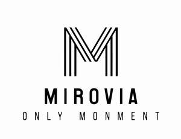

Trade Mark Journal No.2025/035 29 August 2025
UK00004215585 8 June 2025 (9,20,21)

- Class 9
- Adding machines; Calculating disks; Slide-rules; Calculating machines; Computer memory devices; Computers; Identity cards, magnetic; Disks, magnetic; Floppy disks; Computer keyboards; Bar code readers; CD Compact discs (read-only memory); Computer peripheral devices; Couplers (data processing equipment); Electronic pens (visual display units); Encoded magnetic cards; Magnetic data media; Magnetic encoders; Magnetic tape units for computers; Monitors (computer hardware); Monitors (computer programs); Mouse (computer peripheral); Optical character readers; Optical data media; Optical discs; Printers for use with computers; (CPU) Central processing units (processors); Processors (central processing units); Readers (data processing equipment); Scanners (data processing equipment); Disk drives for computers; Electronic pocket translators; Electronic tags for goods; Smart cards (integrated circuit cards); Integrated circuit cards (smart cards); Notebook computers; Pocket calculators; Video game cartridges; computer programs (downloadable software); Mouse pads; Wrist rests for use with computers; Encoded identification bracelets, magnetic; Downloadable ring tones for mobile phones; Downloadable music files; Downloadable image files; USB USB flash drives; Laptop computers; Bags adapted for laptops; Sleeves for laptops; Toner cartridges, unfilled, for printers and photocopiers; Tablet computers; Encoded key cards; Memory cards for video game machines; Computer hardware; Joysticks for use with computers, other than for video games; Protective films adapted for computer screens; Security tokens (encryption devices); Covers for personal digital assistants (PDAs); Covers for tablet computers; Electronic interactive whiteboards; Humanoid robots with artificial intelligence; (PDA) Personal digital assistants (PDAs); Computer software platforms, recorded or downloadable; Thin client computers; Hand-held electronic dictionaries; Wearable computers; ink cartridges, unfilled, for printers and photocopiers; ink cartridges, unfilled, for printers and photocopiers; devices for the projection of virtual keyboards; data gloves; trackballs (computer peripherals); Telepresence robots; stands adapted for laptops; Calculator bag (sheath); Mouse sheath; Keyboard cover; Floppy disk box; Disk drives for computers; Smartglasses; Smartwatches; Smart ring; Mobile phone software applications, downloadable; Integrated circuit cards; CD-ROM CD-ROM Burners; CD CD Burners; DVD DVD drives; LED LED display; SIM SIM Cards; USB USB card readers; (SD) Secure Digital (SD) memory cards; (SD) Secure digital card reader (SD); Semiconductor memory Unit; Semiconductor memory; Encoder and decoder apparatuses; Encoding magnetic stripe card readers; Encoding and decoding device; Laptop calculator sheath; Color document printer; Styluses; Styluses with pen tips for touchscreens; Styluses for touchscreens; Disc enclosure; Disc Driver; Protective cases for disks; Magnetic stripe reader; Magnetic stripe debit card; Magnetic stripe ID wristbands; Magnetic stripe credit card; Storage card; memory card reader; Printheads; Large-screen liquid crystal display; Computer bar; Printer; Computer bags; Computer hardware for electrical communication; Electrophoretic display; Styluses; The electronic code of the wristband; Electronic storage devices; Electronic circuit card; Electronic card reader; Electronic personal notebooks; Electronic calculators; Electronic diary; Case for electronic diary; digital key cards; Card reading device; Electronic credit card readers; Personal computer; Solid State disc (SSD); Computers for flight management system; Light pen; Optical disc storage case; ODM Optical disc Memory; Optical discs reader; Optical disc box; Optical driver; Optical code reader; Optical reader; Optical scanners; Optical character recognition device; Raster Image Processor; Trackball; Trackball input devices; Contains a data carrier for storing printed fonts; Web servers; CD Loose-leaf CD bag; Laser color document printer; Laser document printer; Digital whiteboards; Computer Joysticks; Computer program (downloadable software); Computer stylus; computer servers; Computer cases; Computer monitors; Computer input devices; Computer mouses; Computer network servers; (NAS) Computer network additional storage (NAS) hardware; Computer monitor stands; Assembly brackets for computer hardware; Internal cooling fans for computers; Computer flexible screens; File printers for computers; Computer wireless mouses; Computer game cards (graphic cards); Computer CPUs; Computer terminals; Computer motherboard; Computer; Computer cabinets; Special rotating table for computer; Computer daughterboards; Palmtop computer for note-taking; Intranet servers; Digital gaming software for download; Downloadable graphic design templates; CD Blank CD; USB Blank USB card; USB Blank USB drive; Blank disc; Blank magnetic data storage; Blank optical disc; Blank integrated-circuit cards (blank smart card); Blank computer optical disk; Blank recording discs; Blank flashcards; Blank smart cards; Intranet network cards to connect portable computer devices and computer networks; Analog to digital converters; Memory board; Expanded memory cards; Memory expansion module; Memory module; Inkjet color document printer; Inkjet document printer; Tablet computer stands; Flat panel display; Thermal printer; Flexible disk driver; Floppy disc drive; 3D scanners; Flash card readers; Flash card adaptors; Netbooks; (RFID) RFID labels; (RFID) RFID readers; Secure authentication card for identity authentication; Video image printer; Video game play cards; Handheld scanners; Laptops; Storage devices for data processing equipments; Printed circuit board connector for data processing equipments; Computer for data management; Digital imaging scanners; Digital color document printer; Digital optical disk drive; Digitalized input and output scanners; Digital analog converter; Digital signal processor; Digital audio signal processor; Underwater computer; Desktop computers; Electronic desk calculator; Barcode printers; Barcode scanners; Computer gaming software downloadable from Internet; Communication computer; Image processing digital cards; Image scanners; Graphic accelerators; External computer hard disc drive; Network cards; Network servers; Web hosting server; Microchip Card; Microcomputer; Chip card; Chip card reader; Credit card encoder (computer peripherals); Credit card reader; Pocket electronic calculator; Liquid crystal display; Encoded ID cards; Manuals for computer software stored in digital form especially those stored in floppy discs or read-only CDs; Hard disc drives; Digital and magnetic ID cards for payment services; Storage devices for computers; File printers for computers; mobile phone application software used for booking a taxi; Labels with magnetic records or barcode information loaded; Labels with digital records or barcode information loaded; Labels with optical records or barcode information loaded; Palmtop computer; Photo printers; Read-only CD-Rom; Fingerprint scanners; Fingerprint scanners; Smart card readers; CPU coolers; Money counting and sorting machines; Meters; Apparatus to check stamping mail; False coin detectors; Dictating machines; Holograms; Quantity indicators; Hemline markers; Cash registers; Abacuses; Electronic agendas; Hourglasses; Electron scorer; Fingerprint checking machine; Face recognition equipment; Electronic recognition device for animals; Bill Acceptors; Biometric iris scanner; Biometric scanner; Parking lot electronic ticket machine; Point-of-sale machine (pos machine); Electronic scoreboard; Punched card machines for offices; Photocopiers (photographic, electrostatic, thermic); Toner cartridges, unfilled, for printers and photocopiers; ink cartridges, unfilled, for printers and photocopiers; ink cartridges, unfilled, for printers and photocopiers; Time Attendance Machine; portable fax machine; facsimile equipments; facsimile apparatuses; Digital plotters; Copy equipments; Printhead for plotters; Xerographic printer; Thermal printers; Digital color copying machine; Digital plotters; Scales; Weighing machines; Weighbridges; Letter scales; Weighing apparatus and instruments; Weights; Lever scales (steelyards); Steelyards (lever scales); Balances (steelyards); Precision balances; Baby scales; Scales with body mass analysers / scales with body mass analyzers; Bathroom scales; Automatic gauge; Platform scale; Portable scale; Portable digital electronic scale; Balance weights; Kitchen electronic scale; Electronic body weight scale; Household Body-Fat Scales; Refrigerant scale; Portable electronic scale; Speaking tubes; Aerials; Antennas; Anti-interference devices (electricity); Branch boxes (electricity); Switchboards; Telephone receivers; Transmitting sets (telecommunication); Radios; Intercommunication apparatus; Navigational instruments; Radiotelephony sets; Radiotelegraphy sets; Vehicle radios; Telephone apparatus; Electro-dynamic apparatus for the remote control of signals; Telephone transmitters; Telerupters; Transmitters (telecommunication); Modems; Answering machines; Video telephones; Navigation apparatus for vehicles (on-board computers); Cordless telephones; Radio pagers; Satellite navigational apparatus; Walkie-talkies; Hands-free kits for telephones; Transponders; (GPS) Global Positioning System (GPS) apparatus; Cell phone straps; Smartphones; Cell phones; Mobile telephones; Cellular phones; Mobile telephones; Cellular phones; Cellular phones; Cell phones; Cell phones; Mobile telephones; Wearable activity trackers; Covers for smartphones; Cases for smartphones; Protective films adapted for smartphones; Satellite finder meters; Telecommunication apparatus in the form of jewellery /telecommunication apparatus in the form of jewelry; Drive chopper; Network communication equipment; Protective film for mobile phone screen; Selfie sticks for smartphones; Short distance radio equipment; Walkie talkie; GPS GPS (global positioning system) receiver; GPS GPS navigation appratuses; USB USB wireless router; Plate-like antennas; Portable emergency intercom; Car mount phone holders; Telephone appliance sets; Marine navigation equipments; Phone sets with screen and keyboard; Telephone coupling; phone answering machines; Telephone set sheath; TV broadcast transmitting and receiving equipments; TV antennas; Telecommunications switch; Electronic navigation and positioning equipments and instruments; Electronic navigation instruments; Public telephone set; Public address system; Fixed telephone set; Optic receivers; (WAN) WAN routers; marine radio communication equipments; Aviation radio communication equipment and equipment; Conference telephone; Computer network concentrator; Computer network exchange; Computer network bridge; picturephone set; Radar reflector; Radar jamming device; Radar antenna; Radar display; Positioning electronic devices for lost items using global positioning systems and cellular communication networks; Hands-free speakerphone; Mobile telephones with facsimile apparatus; Internal modem; parabolic antennas; Leather cellphone cases; Automobile navigation device; Automotive Antenna; Global positioning system receiver; Radio frequency transmitter; Radio frequency receiver; Radio frequency antenna; Radio monitor for reappearance of sound and signal; Transmitters of fault signalling; Video multiplexor; Smart watch cellphones; Use a dust plug for the phone jack; Cell phone keyboard; Cellphone cases; Cellphone cases; Cellphone cases; Cellphone mounts and stands; Portable telephone; Digital telephone apparatus; Two-way radios; Antenna Combiner ACOM; Communication modem; Communication transmission equipment; Simultaneous interpretation receivers; External modems; Wristband smart phones; Network Telephone apparatus; Network routers; Microwave horns (Horn antennas); Satellite dishes for satellite transmission; Satellite navigational equipment; Satellite broadcast receiving antenna; Satellite receiver; Satellite transceiver; Satellite antenna; Cordless telephones equipment; Radio wave transmitting antenna; radio direction finder (RDF); Radio transmission equipments; Radio transmissioners and receivers; Radio transmitter; Raidio broadcasting transmissioners and receivers; Reapters for radio and TV equipments; Radio phone equipments; Radio receivers and transmissioners; Radio receiver; Antennas for radio equipments; Radio transceivers; Radio interphone; Radio talking terminal; Radio beacon equipments and apparatuses; Radio signal tuners; Wireless transmitters and receivers; Wireless routers; Antenna for wireless communication equipment; Pager; Paging equipment; Paging devices; Radio transmitters for remote control; Radio receivers for remote control; Hands-free apparatus for mobile telephones; Cable TV transmissioners; Satellite dish; Long range radio navigation instruments; Smart phone or camera with self-timer; Smart phone protection cases; Smart phone protection cases; Clamshell protection cover for smartphones; Waterproof cases for smartphones; Keyboard for Smartphone; Private branch exchange; Automatic phone dialers; Automatic telephone exchange; Automatic phone answering machines; Radar equipment and devices; Roland remote radio navigation equipment and devices; Phonograph records; Sound recording discs; Demagnetizing apparatus for magnetic tapes; Tape recorders; Magnetic tapes; Cabinets for loudspeakers; Tone arms for record players; Sound recording carriers; Monitoring apparatus, other than for medical purposes; Diaphragms (acoustics); Loudspeakers; Record players; Cleaning apparatus for phonograph records; Cleaning apparatus for sound recording discs; Sound recording strips; Audio- and video-receivers; Megaphones; Microphones; Sound transmitting apparatus; Sound recording apparatus; Sound reproduction apparatus; Needles for record players; Styli for record players; Television apparatus; Teleprompters; Speed regulators for record players; Videotapes; Apparatus for changing record player needles; Head cleaning tapes (recording); Video recorders; Horns for loudspeakers; CD Compact discs (audio-video); Acoustic couplers; Juke boxes for computers; Camcorders; Cassette players; CD Compact disc players; Video cassettes; Personal stereos; Headphones; DVD DVD players; Portable media players; Digital photo frames; Electronic book readers; Baby monitors; Video baby monitors; Electric and electronic effects units for musical instruments; Audio interfaces; Equalizers (audio apparatus) / equalisers (audio apparatus); Subwoofers; Virtual reality headsets; Audio mixers; Security surveillance robots; Rearview cameras for vehicles; Wearable video display monitors; wah-wah pedals; height measuring instruments; ear pads for headphones; Television camera; Self-motion advertising machine; Overtime reverberation ware; Earphone; Acoustic pick up; Compact disc (audio/video); Semiconductor radio; Learning machine; Learning machine used for computer-aided education; Speech synthesizer with audio books; Automobile data recorder; Set Top Box (STB); CD CD players; CD CD; DVD DVD boxes; DVD DVD recorders; MP3 MP3 players; MP4 MP4 players; Closed circuit television (CCTV) camera; Portable multimedia players; Portable box video cameras; Portable sound reproduction equipment; Laptop radio; Ultra-HD TVs; Magnetic tapes players on car; Mobile TV on car; Video recorders on car; Magnetic tape video recorders; Tape recorder; Clear tape for tape recorder; Magnetic tapes eraser; Magnetic tapes cleaner; Magnetic Head cleaning apparatus; Speakers with embedded amplifiers; Radio with clock; Plasma TVs; Plasma display panel TVs; Telephone receiver; Earphone for telephone; Electronic and Digital video monitoring equipment; Television receiver (Television apparatus); TV decoders; TV display panels; Electronic book readers; Dampeners for electronic audio equipments; Dust plug for headphone jack; Golf swing analysis video cameras; HD TVs; Personal video recorders; Endoscopic cameras for industrial use; Solid state hard disk recorders; Optical discs players; Video cassette recorder; Tape cassette recorder; Cassette tape recorders; Outdoor surveillance camera; Surround loudspeaker; Audio mixing consoles; CD Loose-leaf CD bag; guitar amplifiers; noise-canceling headphone; Equalizer (audio device); OK Karaoke machines; Blank audio disc; Blank cassette video tapes; Blank cassette audio tapes; Blank video tapes; Blank audio tapes; Stereo sound tuners; Phonograph; Gramophone records; Head cleaning tapes for video recorders; Audio Cassette players; Animation video tapes; Animation DVDs; Long playing (LP) record; Erasing head; Dubbing equipments; Audio mixer containing integrated amplifier; Car audio speakers; Car audio equipments; in-ear monitor; Acoustic input coupler; Microphone arm stand for sound transmission devices; Players for sound and image medias; Recorders for sound and image medias; Wireless transmitting apparatus for Sound message; Video disk player; Video monitor; Video recorders & players; Video signal receivers; Radio; Handheld megaphones; Digital multimedia broadcasting televisions; Digital sound processors; Double channel stereo recording microphone; Bar speaker; Communication device microphone; Pickup device for communication equipment; Head-mounted video display; Image amplifier; Image intensifiers; Satellite TV receiving equipment; Fabric sound filter for wireless equipments; Wireless broadband radio; Wireless speaker; Virtual reality games with headphones; Speakers; Loudspeaker with signal processor; liquid-crystal display televisions; Earphone for mobile telephones; CD Music CDs; Music tapes; Music headphones; Audio transmitter; Audio frequency amplifiers; Audio switchers; Video disc players; Cable TV receivers; CD CD player used by connecting with the computer; Computer headsets; Personal earphone for use with voice transmission equipment; Personal headsets for voice transmission devices; DVD Pre-recorded exercise DVD; DVD Music DVDs, recorded; Pre-recorded music video tapes; Pre-recorded music video tapes; Pre-recorded music audio tapes; Microphone for remote communication equipment; Wireless headset for smartphones; Subwoofers; Jukebox (music); Portable audio player; Digital recorder; Enlarging apparatus (photography); Close-up lenses; Frames for photographic transparencies; Cinematographic cameras; Darkrooms (photography); Drying racks (photography); Editing appliances for cinematographic films; Apparatus for editing cinematographic film; Shutter releases (photography); Shutters (photography); Centering apparatus for photographic transparencies; Cameras (photography); Slide projectors; Transparency projection apparatus; Flash-bulbs (photography); Projection screens; Screens (photography); Photographic racks; Drainers for use in photography; Spools (photography); Epidiascopes; Cases especially made for photographic apparatus and instruments; Exposure meters (light meters); Film cutting apparatus; filters (for use in photography); Drying apparatus for photographic prints; Glazing apparatus for photographic prints; Screens for photoengraving; Heliographic apparatus; Carriers for dark plates (photography); Darkroom lamps (photography); Magic lanterns; Speed measuring apparatus (photography); Washing trays (photography); Stands for photographic apparatus; Viewfinders, photographic; Projection apparatus; Diaphragms (photography); Filters for ultraviolet rays, for photography; Tripods for cameras; Electrified rails for mounting spot lights; Flashlights (photography); Lens hoods; Selfie sticks (hand-held monopods); Thermal imaging cameras; Selfie lenses; Teaching projection lamp; Photograph apparatus bag; Equatorial telescopes; Cameras with linear image sensor; Film projector; Film machine and equipment; Film editing equipments; Projector for film editing; Projection screens for cinematographic film; Film processors; Multiframe large format cameras; Digital camera for industrial use; Optical shutter; Infrared camera; Frames for slides; Slide carrier; Lens shutters; Shutters (camera); Shutter cable release (camera); Rapid imaging camera; Contour projectors; Filter (photography); Lens filters (camera); Plate Cameras; Viewfinders (camera); Flash (camera); Cases for photographic equipment; Photographic rinse tray; Reflector for photography; Exposure meter for photography; Flash for photography; Video projector; Digital single lens reflex cameras; Digital camera; Underwater cameras; Lens hood (camera); Angle viewfinders; Microfilm readers; Camera lens bayonet; Camera lens adapter ring; Camera lens adapter; Tilt head for cameras; Miniature projector; LCD projectors; Disposable cameras; Film copying devices; Film splicers; Film recording devices; Cameras; Camera shutters; Camera tripods; Camera flashes; Camera case; Film cassettes for cameras; Film spools for cameras; Flashlights for camera; The fish-eye lens for the camera; Camera lens hoods; Camera bags; Camera equipments bags; Lens for camera devices; Actinometers for camera devices; Smart phone or camera with self-timer; Timers (camera); Autofocus projectors; Self-developing films cinema cameras; Self-developing film camera; Containers for microscope slides; Eyepieces; Objectives (lenses) (optics); Diffraction apparatus (microscopy); Microscopes; Refractometers; Mirrors for inspecting work; Optical lamps; Optical lanterns; Optical lenses; Magnifying glasses (optics); Instruments containing eyepieces; Periscopes; Mirrors (optics); Prisms (optics); Optical apparatus and instruments; Optical glass; Photometers; Refractors; Spectroscopes; Stereoscopes; Stereoscopic apparatus; Binoculars; Telescopes; Sighting telescopes for firearms; Telescopic sights for firearms; Optical condensers; Telescopic sights for artillery; LED LED microscopes; Zoom Microscopes; Monocular stands; An anti-glare filter for television; Electron microscope; reflecting telescope; Magnifying glasses; Photo reflector; optical coupler; Optical lens blank; Optical prisms; Optical filter for optical device; Biomicroscope; Metalloscope; Prism (for binoculars); Prism (for microscopes); Polarizing microscope; scanning electron microscope; scanning probe microscope; Biological microscope; Binocular telescope forhunting; Zenith telescopes; Planetarium projector; Telescope mirrors; Telescope optical tubes (lens barrels); Telescope lens; Telescopic sight; Tripods for telescopes; Telescopic sight; Microscope mirrors; Microscope condenser; Microscope optical tubes (lens barrels); Microscope lens; Microscope illumination devices; Spyglasses; Small-sizedbinocle binoculars; Night vision goggles; fluorescence microscope; Telescope with long handle; Collimating telescope; Sheaths for electric cables; Cables, electric; Wires, electric; Magnetic wires; Identification threads for electric wires; Identification sheaths for electric wires; Telegraph wires; Materials for electricity mains (wires, cables); Copper wire, insulated; Telephone wires; Junction sleeves for electric cables; Starter cables for motors; Coaxial cables; Fibre [fiber (Am.)] optic cables; Electric wire harnesses for automobiles; USB USB cables; Cables for sound and images transmission; Optical fiber for sound and image transmission; Cables for transmission and reception of cable TV signals; Wires with plastic cladding; Wires with rubber cladding; Coaxial cables with electronic filter; Telephone line extension cord; cable joint; Cable extension; Metal cable nipple joints; Bare electrical wires; Wires and cables; Electric extension cords; Communication cable; Feed cable; Headphone adapter; Fibre optics joint sleeve; Optical cable; Cable for optical signal transmission; Computer cables; ground cable; Jumper cables; Jump start cable; Mineral insulated cables; Connection cables; Connection cables; Strong current aerial cables; Cables for sound and images transmission; USB USB cables for cellphones; Electric transmission line joints; Data cables; Data synchronization cable; Underwater cables; Wireless junction cable; Coils, electric; Magnets; Electromagnetic coils; Amplifiers; Amplifying tubes; Amplifying valves; Transformers (electricity); Distribution boxes (electricity); Thermionic valves; Thermionic tubes; Terminals (electricity); Printed circuits; Collectors, electric; Switchboxes (electricity); Commutators; Capacitors; Condensers (capacitors); Conductors, electric; Electricity conduits; Circuit closers; Connectors (electricity); Junction boxes (electricity); Contacts, electric; Regulating apparatus, electric; Converters, electric; Switches, electric; Limiters (electricity); electric plugs; Electrical plug; Current rectifiers; Cell switches (electricity); Reducers (electricity); Circuit breakers; Distribution boards (electricity); Distribution consoles (electricity); Fluorescent screens; Ducts (electricity); Control panels (electricity); Connections for electric lines; Couplings, electric; Connections, electric; Relays, electric; Thermostats; Fuses; Galena crystals (detectors); Armatures (electricity); Inverters (electricity); Time switches, automatic; Resistances, electric; Rheostats; Choking coils (impedance); Wire connectors (electricity); Remote control apparatus; Vacuum tubes (radio); Variometers; Fuse wire; Holders for electric coils; Integrated circuits; Semi-conductors; Chips (integrated circuits); Discharge tubes, electric, other than for lighting; Electric discharge tubes, other than for lighting; Optical fibres (light conducting filaments) Optical fibers (light conducting filaments); Wafers for integrated circuits; Light dimmers (regulators), electric; Light regulators (dimmers), electric; Transistors (electronic); Video screens; Covers for electric outlets; Lighting ballasts; Solenoid valves (electromagnetic switches); Voltage surge protectors; Stage lighting regulators; Printed circuit boards; (LED) Light-emitting diodes (LED); Triodes; Step-up transformers; Electrical adapters; Electronic key fobs being remote control apparatus; Electronic numeric displays; climate control digital thermostats; piezoelectric sensors; (OLED) organic light-emitting diodes (OLED); (QLED) quantum dot light-emitting diodes (QLED); electric sockets; Power outlets; Epitaxial wafers of silicon; Carbon electrode; Graphite electrode; Carbon grains; Carbon tube; Passive polar plates; Mercury rectifier cathode; Electron tube anode; Anode paste; Emission tube; UHF tube; Electron beam tube; Potentiometer; Electron tube; Semiconductor device; Magnetic material and apparatus; Instrument transformer; Transducer; Magnetic eraser; Voltage regulator; Stabilized voltage power supply; Remote controller for household use; Starter; Low voltage power supply; Height voltage switch board; Fuse; Bus duct; Electrically heated socks; Electronic chip; Atomization piece; Semiconductor chips; Structural semiconductor wafers; Microchip (Computer hardware); Resistors; Resistance wire; Waveguide for high power electron beam transmission; Electrical signal attenuators; Photoelectric Sensors; Pulse operated latching relays; Oscillators; Automatic tracking of the sun sensor; Electronic semiconductor; Solar wafers; large scale integration (LSI) circuits; Integrated circuit plates; Circuit boards; Electric circuit; Electronic circuit board; Electronic integrated circuit; Multiprocessor chips; HD integrated graphic chip; Integrated circuit module; Computer circuit board; computer's processor; Clock generator for computers; Logic gates and circuits; Decision circuit; Heavy-current circuits; Flexible printed circuit board; Interface circuit for Camcorders; Micro controller units(mcu); Micro chips; Electronic chip for making integrated circuits; OLED Organic light-emitting diode(OLED) displays; Semiconductor optical amplifiers; Fuses (for electric current); Fuse (for telecommunication equipment); Superradiance laser diodes; Magnetism coil; Magnetic core; Monolithic ceramic capacitors; Electrodes; Electrical current fuses; Chokes for electrical devices; Capacitors (telecommunication equipments); Electric fuse; Capacitors (telecommunication equipments); Capacitors (telecommunication equipments); Electronic circuitconnector; Electric diodes; Resistors (telecommunication devices); Touch screen sensor; Diode; Light-emitting diode (LED); Industrial magnets; Power amplifier; Photodiode; Photoresistance; Circulator(electronic element); Laser diode; grounding terminal; Transistors; Thyristors; Winding wire (electrical); Thermistors; Electrodes for lab researches; Diplexers; Bidirectional trigger diodes; Equalizers for dual ampliers; Carborundum diode; Aerial boosters; Aerial filters; Radio tubes; Cathode-ray tube (CRT); Music instrument amplifiers; Commutator tubes; LED LED orientation sensors; safety conductor plugs; Motion sensors for safety lamps; Current transformers (electricity); Frequency converter; Voltage transformers (telecommunication devices); Acceleration pick-up sensors; Electronic pickup sensors for solar radiation measurement; Speed sensors; Position sensors; Temperature sensors; Plug connector; Patch board; Differential switch; Ultrasonic sensor; Optical filter for plasma display panel; Electric transformer; Electrical connector receptacle; Electromagnet; Pneumatic-electrical control device; Electrical contactors; Power boards; Electric current limiting reactors; Electrical control panels; Cable connector; Power regulator; Power converters; Electrical connectors; Electrical current switches; Current control device; Electrical current converters; Closed circuits; Armatures for electrical devices; Electrical junction boxes; Capacitor box; Electrical dimmers; Voltage monitoring modules; Voltage regulator; Power switch; Power controller; Power connectors; Power adaptors; Electronic flash switches; Electronic speed regulators; Timing sensor; Timer switches; Terminators (electrical); Circuit breaker switches; Multi-start patch board; Flyback transformer; Power amplifiers & voltage converters; Vibration sensor for windmill; Radiation sensors; Induction voltage regulator; High-frequency switches; High-frequency switching power supply; Variable-frequency drives (VFD) for high-speed electrical motors; High voltage multiplier; High voltage transformer; High voltage reactor; Inverters for power supply; Photomultiplier tube; Optical sensor; Optical position sensor; Overvoltage protection relay; infrared sensor; Computer monitors; Electric relays; Acceleration sensor; Step-down voltage transformers; Alarm sensors; programmable logic controller; Surge suppressors; Coolant temperature sensor; Pin headers (electrical); Distribution transformer; Power distribution block; Distribution equipment; Distributing boxes; Frequency synthesizer circuits; Electronic control unit for automobiles; Variable-frequency drives (VFD); Thermal overload relay; Dispersion-shifted optical fibers; Biochip sensors; Acoustical-electrical transducer; mercury switch; Illumination dimmers; Phase modulator; Communication device switch; Coaxial relays; Temperature sensor; Frequency stabilizers; Voltage stabilizer; Contamination sensor; Electric relays for radio and tv equipments; Wireless anti-interference filter; Banana plugs; Resonator; rotary encoder; Rotating converter; Pressure transducer; Liquid-level sensor; Trailing sockets; Florescent lamp ballasts; Engine oil level sensor; Round pin connector; Adaptor for carrier cigarette lighter socket; Light switches; Lighting control device; vibrating sensor; Rectifier module; Direct current(DC) converters; Changeover plug; Adapter plug; Automated distribution boards; Autotransformer; (TFT-LCD) Thin-film transistor TFT-LED displays; Touch screen; Glare filter for television apparatus and computers indicators; Electroluminescent display (ELD); Digital panels; Liquid crystal displays (LCD); Liquid crystal displays (LCD); TV remote control device; Air conditioner remote control; Remote controls for projectors; Nonlinear optical fibers; Optical fibers; Optical to electrical coverters; PV inverters; Optical fibre; Optical fibre couplers; Fiber Optic Phase Shifters; Polarization-maintaining optical fibers; LED LED driver; Motion recognition sensor; Electronic chip for making integrated circuits; Igniting apparatus, electric, for igniting at a distance; Electric apparatus for remote ignition; Electric installations for the remote control of industrial operations; Electric apparatus for commutation; Lightning arresters; Lightning conductors; Lightning conductors (rods); Electric control equipments for heating supply; Electric control equipments for energy control; Lightning arresters; Fire extinguishers; Fire beaters; Fire hose nozzles; Fire pumps; Sprinkler systems for fire protection; Fire hose; Fire extinguishing apparatus; Fire extinguishing apparatus for automobiles; Fire sprinkler systems; Protection devices for personal use against accidents; Clothing for protection against accidents, irradiation and fire; Asbestos gloves for protection against accidents; Asbestos clothing for protection against fire; Anti-glare glasses; Visors for helmets; Protective helmets; Respiratory masks, other than for artificial respiration; Respiratory masks, other than for artificial respiration; Solderers' helmets; Diving suits; Fire escapes; Workmen's protective face-shields; Nets for protection against accidents; Safety nets; Life nets; Safety tarpaulins; Filters for respiratory masks; Gloves for protection against accidents; Gloves for divers; X Gloves for protection against X-rays for industrial purposes; Clothing for protection against fire; Garments for protection against fire; Life saving apparatus and equipment; Protective masks; Breathing apparatus for underwater swimming; Oxygen transvasing apparatus; Ear plugs for divers; Teeth protectors; X Protection devices against X-rays, not for medical purposes; Respirators for filtering air; Breathing apparatus, except for artificial respiration; Life buoys; Life jackets; Life belts; Bullet-proof waistcoats [vests (Am.)]; Bullet-proof vests (Am.); Bullet-proof waistcoats; Divers' masks; Knee-pads for workers; Safety restraints, other than for vehicle seats and sports equipment; Goggles for sports; Nose clips for divers and swimmers; Protective helmets for sports; Asbestos screens for firemen; Riding helmets; Clothing especially made for laboratories; Bullet-proof clothing; Reflective safety vests; Mouth guards for sports; Head guards for sports; Snorkels; survival blankets; headgear being protective helmets; Acidproof glove; Acidproof dress and skirt; Protective goggle; Waterproof anorak; Acidproof rubber overshoes; Fireproof shoe; Helmet for riding motorcycle; Lunettes; Safety goggles; Baseball batsman's helmet; Glacier goggles; Riot shields; Anti-dust mask; Dust masks; Dust goggles; Protective mask; Radiation protection apparels; Protection masks; Lenses for protection masks; Protection helmet masks; Protection glasses; Clothing for protection against accidents; Motorcyclist apparels for accident and harm protection; Crash helmets; Snorkelling snorkel; football helmet; American football game helmets; Skateboarding helmets; Skiing goggles; Ski helmets; The ski helmet; Motorcycle helmet; Diving goggles; Weights belt for diving; Buoyancy compensator devices; Life jackets for dogs; Aqualung swimming mask; Self-contained underwater breathing apparatus (Scuba) regulators; Self-contained underwater breathing apparatus (Scuba) oxygen cylinders; Underwater breathing apparatus; Sports helmets; Snow goggles; Swimming mask; swimmer nose clips; bicycle helmets; Whistle alarms; Acoustic (sound) alarms; Sound alarms; Alarms; Fire alarms; Alarm bells, electric; Push buttons for bells; Peepholes (magnifying lenses) for doors; Bells (warning devices); Locks, electric; Sirens; Theft prevention installations, electric; Anti-theft warning apparatus; Buzzers; Electric door bells; Smoke detectors; Electronic access control systems for interlocking doors; Electric locks for vehicles; Electric alarms; Electric anti-theft alarms; Electronic siren; Electric locks; Anti Break-in alarms; Anti-theft alarms for non-transportation vehicles; Fire detectors; Gas detectors & alarms; Door viewers; Biometrics fingerprint door locks; Digital locks; Flammable gas detectors & alarms; Radio frequency (RF) remote control locks; Central alarms; Eyeglass chains/Spectacle chains; Spectacle cords / Eyeglass cords; Correcting lenses (optics); Spectacles / Eyeglasses; Spectacle lenses; Eyeglass frames; Spectacle frames; Pince-nez; Contact lenses; Containers for contact lenses; Spectacle cases; Eyeglass cases; Sunglasses; 3D 3D spectacles; Glasses cloth; Monocle; Children's glasses; Spectacle cases for children; Annular contact lens; Pince-nez lanyards; Pince-nez frames; Pince-nez chains; Correcting eyeglasses; Eyeglasses frames made of metal and synthetic materials; Eyeglasses frames made of metal or metal-plastic composites; Opera glasses; Presbyopic glasses; Polaroid glasses; Riding glasses; Sunglasses lanyards; Spectacle lenses for sunglasses; Eyeglasses with anti-reflective coating; Un-assembled eyeglasses frames; Side-lens for glasses; Eyeglasses bags; Eyeglass shelf; Eyeglasses chains; Boxes for eyeglasses and sunglasses; Chains for eyeglasses and sunglasses; Glasses frame and sunglasses frame; Lens blank; Eyeglasses temples; Eyeglasses nosepads; Eyeglasses chains; Contact lens blanks; Sports glasses; Batteries, electric, for vehicles; Accumulators, electric, for vehicles; Battery jars; Accumulator jars; Battery boxes; Accumulator boxes; Plates for batteries; Batteries for lighting; Anodes; High tension batteries; Anode batteries; Battery chargers; Chargers for electric batteries; Galvanic cells; Galvanic batteries; Grids for batteries; Batteries, electric; Accumulators, electric; Cathodic anti-corrosion apparatus; Anticathodes; Photovoltaic cells; Cathodes; Solar batteries; Solar panels for the production of electricity; Chargers for electronic cigarettes; Charging stations for electric vehicles; Batteries for electronic cigarettes; Portable power bank (portable battery chargers); USB USB chargers; Backup battery pack; Battery charger for portable computers; Battery charging devices; Battery terminal; Battery boxes; Battery lead; Battery emergency starter; Chargers for cellphone batteries; Dry battery; photocell; Module – photovoltaic; Charging devices for motor vehicles; Crystal silicon solar cells; Rechargeable batteries; Charging devices for rechargeables; Lithium-ion batteries; Lithium storage batteries; Nickel-cadmium accumulators, electric; Battery charger for tablet computer; Car battery; Fuel cell; Wet battery; Batteries, electric, for flashlights (torches); Mobile phone battery charger; Photovoltaic devices and equipment for solar power generation; Solar powered charger; Rechargeable power batteries for electric vehicles; Wireless chargers; Battery separator; Rechargeable batteries chargers; Batteries, electric, for mobile telephones; Wireless charger for smart phones; Audiphone batteries; Animated cartoons; Slides (photography); Transparencies (photography); Films, exposed; Cinematographic film, exposed; X X-ray films, exposed; X X-ray photographs, other than for medical purposes; Exposed photographic microfilm; Slide film, exposed; Exposed photo slideshow; Exposed camera films; Egg-candlers; Dog whistles; Decorative magnets; Electrified fences; Electronic collars to train animals; Sports whistles; Portable remote-control stopper; Refrigerator magnets; .
- Class 20
- Cupboards; Medicine cabinets; Benches (furniture); Playpens for babies; Cradles; Cots; Library shelves; Bedsteads of wood; Bottle racks; Sideboards; Desks; Office furniture; Costume stands; Furniture; Index cabinets (furniture); Filing cabinets; Chairs (seats); Seats; chaise longues / chaise lounges; Head-rests (furniture); Hat stands; Display stands; Coat hangers; Clothes hangers; Shelves for file cabinets; Armchairs; Chests of drawers; Counters (tables); Tables; Mattresses; Tea trolleys; Tea carts; Drafting tables; Divans; Cabinet work; School furniture; Shelves for typewriters; Typing desks; Beds; Racks (furniture); Flower-stands (furniture); Flower-pot pedestals; Gun racks; Meat safes; Chopping blocks (tables); Covers for clothing (wardrobe); Furniture of metal; Newspaper display stands; Magazine racks; Washstands (furniture); Lecterns; Coatstands; Standing desks; Umbrella stands; Screens (furniture); Furniture shelves; Writing desks; Seats of metal; Sofas; Settees; Bed bases; Tables of metal; Dressing tables; Shelves for storage; Lockers; Deck chairs; Trestles (furniture); Plate racks; Showcases (furniture); Stands for calculating machines; Dinner wagons (furniture); Massage tables; Water beds, not for medical purposes; Stools; Hairdressers' chairs; Garment covers (storage); Trolleys (furniture); High chairs for babies; Infant walkers; Carts for computers (furniture); Trolleys for computers (furniture); Book rests (furniture); Towel stands (furniture); Wall-mounted baby changing platforms; Freestanding partitions (furniture); Inflatable furniture; Jewellery organizer displays; Jewelry organizer displays; Shelving units; Console tables; Bookcases; Valet stands; Bassinettes; Moses baskets; Wardrobes; Footstools; Air beds, not for medical purposes; Shower chairs; bath seats for babies; lap desks; portable desks; Drawing table; Cabinet for dressing purpose (furniture); TV set supporting stand; Acoustics bracket; Tea table; Piano bench; Rocking chair; ottoman; Easy chair; Barstool; Office armchair; Office seat; Office chairs; desk; Side table; dining chair; dining-table; Surfboard display frame; Inflatable chair; kitchen cupboard; Cabinets; Bed guardrail; Marble table; A cupboard with a mirror; spring-mattress; Custom kitchen furniture; Custom cupboards; Oriental veneer screen; Oriental folding wall screen; bean bag sofa; Furniture for houses, offices and gardens; Antique furniture; Non-medical hydraulic bed; Clothing display rack; Steel pipe furniture; shelf table; Mobility chair; Luggage shelves (furniture); Luggage rack (furniture); Flower pot rack; Dressing table; Household shrine; Metal storage cabinet; metal shelf; metal tool cabinet; Metal cabinet; Wine racks; adjustable table; Adjustable bed; Living Room Furniture; Haircut chair; Haircut chair; Reed screen; Camping furniture; Beauty chair; Deck chairs; Porch swing chair; Wood substitute furniture; wooden furniture; Diaper replacement table; Bentwood furniture; Japanese-style tea set cabinet; Japanese-style hand; Japanese legless chair; Mattresses made of flexible wood; Latex mattress; Cushioned furniture; cushion chair; Three mirror dresser; sofa bed; Furniture for commodity display; display cabinet; shelf; Plastic furniture for courtyard; Toy box (furniture); bedroom furniture; Oblique back armchair; cabinet; Banquet chair; camping furniture; chair; Baby diaper replacement table; Toddler fence; Bathroom furniture; Magazine rack (furniture); display cabinet; Organizer displays; Display table; chairs; Folding bed; Folding shelf; Folding chair; Folding tables; Plant shelf; Bamboo furniture; Sitting and lying double folding chair; furniture; Camping tables; Casks of wood for decanting wine; Fishing baskets; Corks for bottles; Corks; Taps, not of metal, for casks; Faucets, not of metal, for casks; Loading pallets, not of metal; Containers, not of metal, for liquid fuel; Containers, not of metal (storage, transport); Floating containers, not of metal; Trays, not of metal; Vats, not of metal; Staves of wood; Packaging containers of plastic; Closures, not of metal, for containers; Casks, not of metal; Cask stands, not of metal; Crates; Hampers (baskets) for the transport of items; Transport pallets, not of metal; Handling pallets, not of metal; Bakers' bread baskets; Tanks, not of metal nor of masonry; Reservoirs, not of metal nor of masonry; Troughs, not of metal, for mixing mortar; Bins, not of metal; Chests, not of metal; Barrels, not of metal; Cask hoops, not of metal; Barrel hoops, not of metal; Barrel hoops, not of metal; Cask hoops, not of metal; Bungs, not of metal; Plugs, not of metal; Sealing caps, not of metal; Bottle caps, not of metal; Bottle closures, not of metal; Bottle fasteners, not of metal; Bottle casings of wood; Baskets, not of metal; Letter boxes, not of metal or masonry; Chests for toys; Screw tops, not of metal, for bottles; Tool boxes, not of metal, empty; Tool chests, not of metal, empty; Jerrycans, not of metal; Boxes of wood or plastic; Oil drainage containers, not of metal; stoppers, not of glass, metal or rubber; Plastic storage box; Glass fiber reinforced plastic container; Industrial storage tank of non-metal, non-stone; Nonmetallic, non-brick mailbox; Gas storage tank of non-metallic, non-masonry; Non-metallic, non-masonry storage containers (for storage or storage); Nonmetallic, non-masonry storage container; Plugs for industrial packaging containers; Wooden lids for industrial packaging containers; Plastic stoppers for industrial packaging containers; Wooden case for industrial packaging; Industrial bamboo basket; Household non-metallic, non-brick water tank; wooden case; Wooden industrial packaging container; Wooden storage tank; Non-glass, non-metal, non-rubber stoppers for bottles; Plastic stooper for bottles; Cork stopper; Plastic pallets for food packaging; plastic case; Plastic storage container; Plastic reel for mailing; Non-metallic containers for transport; Bamboo industrial packaging container; Clips, not of metal, for cables and pipes; Clips, not of metal, for cables and pipes; Clips, not of metal, for cables and pipes; Reels of wood for yarn, silk, cord; Brush mountings; Screens for fireplaces (furniture); Loading gauge rods, not of metal, for railway waggons (wagons); Ladders of wood or plastics; Mobile Boarding stairs, not of metal, for passengers; Mats, removable, for sinks; Removable mats or covers for sinks; Reels, not of metal, non-mechanical, for flexible hoses; Winding spools, not of metal, non-mechanical, for flexible hoses; Stair rods; Work benches; Steps (ladders), not of metal; Tent pegs, not of metal; Valves, not of metal, other than parts of machines; Keyboards for hanging keys; Vice benches (furniture); Drain traps (valves) of plastic; Water-pipe valves of plastic; Mooring buoys, not of metal; Saw horses; Saw benches (furniture); Step stools, not of metal; Rings, not of metal, for keys; Bag hangers, not of metal; Clips of plastic for sealing bags; Plastic ramps for use with vehicles; hand-held flagpoles, not of metal; Nonmetal ball valve; Plastic string clip; Plastic trough for cable and wire; Soft ladder; Non-metallic sealing clamp for bags; Nonmetallic cable clamp; Non-metallic garden pile; Nonmetallic ladder; Work table; Clips, not of metal ， for cables; Manually operated ceramic valves (non-machine parts); Plastic valves (non-machine parts); Plastic angle valves (other than parts of machines); Silvered glass (mirrors); Moldings (mouldings) for picture frames; Moldings for picture frames; Mouldings for picture frames; Mirrors (looking glasses); Picture frames; Picture rods (frames); Picture frame brackets; Mirror tiles; Hand-held mirrors (toilet mirrors); picture frame; Rotatable dressing mirror; Shaving mirror; Frame for pictures and photographs; Bathroom mirror; Decorative mirror; Embroidery frames; Fans for personal use, non-electric; Rattan; Plaited straw, except matting; Straw plaits; Straw edgings; Reeds (plaiting materials); Wickerwork; Bamboo curtains; Shoulder poles (yokes); Woven articles of bamboo (not including hats, mattings, mattresses); Woven articles of rattan whip (not including shoes, hats, mattings, mattresses); Woven articles of palm fiber (including palm fiber boxes, not including mattings, mattresses); Woven articles of straw (not including shoes, hats, mattings, mattresses); Wicker-woven basket; Bamboo crafts; Bamboo and wooden crafts; Bamboo basket; Wheat straw craftwork; Straw(woven material); Straw crafts; Hand-held flat fan; Handheld folding fan; Rattan (raw or semi-processed raw material); Rattan figurines; Reed, rattan or bamboo shade; Yellow amber; Stuffed animals; Animal claws; Whalebone, unworked or semi-worked; Animal horns; Imitation tortoiseshell; Stag antlers; Dressmakers' dummies; Tailors' dummies; Mannequins; Coral; Horn, unworked or semi-worked; Corozo; Tortoiseshell; Oyster shells; Meerschaum; Mobiles (decoration); Mother-of-pearl, unworked or semi-worked; Stuffed birds; Bead curtains for decoration; Animal hooves; Statues of wood, wax, plaster or plastic; Ambroid bars; Ambroid plates; Works of art of wood, wax, plaster or plastic; Busts of wood, wax, plaster or plastic; Shells; Plastic statuettes of wood, wax, plaster or plastic; Figurines of wood, wax, plaster or plastic; Wind chimes (decoration); Crucifixes of wood, wax, plaster or plastic, other than jewellery; Crucifixes of wood, wax, plaster or plastic, other than jewelry; Raw and semi-processed horn, ivory, shell products; Lacquer craftwork; Feather craftwork; Cork craftwork; Bark picture; Clay moulding craftwork; Fiber-glass reinforced plastic crafts; Resinous craftwork; Resinous Mini-sculpture; Shell (unprocessed or semi-processed); Dream net (ornaments); Tortoiseshell shell (raw or semi-processed material); Animal teeth (raw or semi-processed materials); wind-bell; Bone figurine; Sepiolite (raw or semi-processed materials); Amber statue; Amber art; Nutshell crafts; waxen image; Wax art; Half-length statue of wood, wax, plaster or plastic; Wooden sculpture; Wooden works of art; Artificial amber making statue; Artificial amber works of art; Artificial animal horn; Coral (unprocessed or semi-processed); Gypsum statue; Gypsum made of small statue; Gypsum art; Plastic sculpture; Plastic works of art; Unprocessed or semi-processed ivory; Ivory statue; Display mannequin models for clothing; Decorative wind bell; Display boards; Stakes, not of metal, for plants or trees; Placards of wood or plastics; Numberplates, not of metal; Registration plates, not of metal; Registration plates, not of metal; Nameplates, not of metal; Nameplates, not of metal / Identity plates, not of metal; Identity plates, not of metal; House numbers, not of metal, non-luminous; Signboards of wood or plastics; Inflatable publicity objects; Plastic key cards, not encoded and not magnetic; Labels of plastic; Nameplate of non-metallic door; advertising balloon; Decorations of plastic for foodstuffs; Top finish of cake made of plastic; Beehives; Beds for household pets; Nesting boxes for household pets; Kennels for household pets; Comb foundations for beehives; Sections of wood for beehives; Dog kennels; Nesting boxes; Fodder racks; Honeycombs; Scratching posts for cats; Pet cushions; Dispensers for dog waste bags, fixed, not of metal; Birdhouses; Pet inflatable bed; Animal nest; Dog bed; Cat bed; Identification bracelets, not of metal; Coffins; Coffin fittings, not of metal; Funerary urns; Cardboard coffin; Wood ribbon; Coathooks, not of metal; Hooks, not of metal, for clothes rails; Towel dispensers, not of metal, fixed; Towel dispensers, fixed, not of metal; Furniture fittings, not of metal; Bed fittings, not of metal; Bed casters, not of metal; Partitions of wood for furniture; Furniture partitions of wood; Furniture casters, not of metal; Clothes hooks, not of metal; Table tops; Doors for furniture; Edgings of plastic for furniture; Knobs, not of metal; Bathtub grab bars, not of metal; Brackets, not of metal, for furniture; Bumper guards for cots, other than bed linen / Bumper guards for cribs, other than bed linen; Legs for furniture; Feet for furniture; locker; Drawer partition; Porcelain spherical handle; Nonmetallic cap hook; Nonmetallic spherical handle; Non-metallic coat hook; Furniture leg protective mat; Furniture with anti-collision strip; Bedding, except linen; Cushions; Pillows; Air pillows, not for medical purposes; Straw mattress; Straw mattresses; Bolsters; Air cushions, not for medical purposes; Air mattresses, not for medical purposes; Mats for infant playpens; Baby changing mats; Sleeping pads; Sleeping mats; Camping mattresses; Head support cushions for babies; Anti-roll cushions for babies; Head positioning pillows for babies; Down leather pillow; Jade pillow; Magnetic therapy pillow; U U-pillow; bolster; Breast pillows; Non-medical air-filled gasket; Neck cushion; Neck pillow; Neck pillow; Inflatable neck pad; Inflatable pillow; Latex pillow; Cushions(furniture); Chair sets; cushion filled with hair; bamboo pillow; Curtain rings; Hinges, not of metal; Nuts, not of metal; Curtain holders, not of textile material; Curtain rollers; Window fittings, not of metal; Door fittings, not of metal; Slatted indoor blinds; Latches, not of metal; Curtain rails; Curtain rods; Curtain hooks; Curtain tie-backs; Locks, not of metal, for vehicles; Screws, not of metal; Rivets, not of metal; Dowels, not of metal; Pins(pegs), not of metal; Pegs (pins), not of metal; Bolts, not of metal; Binding screws, not of metal, for cables; Plugs (dowels), not of metal; Wall plugs, not of metal; Locks, other than electric, not of metal; Poles, not of metal; Pulleys of plastics for blinds; indoor window blinds of woven wood/indoor window shades of woven wood; indoor window blinds (furniture)/indoor window shades (furniture); Door handles, not of metal; Door bolts not of metal; indoor window blinds of paper/ indoor window shades of paper; indoor window blinds of textile/ indoor window shades of textile; Door bells not of metal, non-electric; Door knockers, not of metal; Collars, not of metal, for fastening pipes; Door stops, not of metal or rubber; Window stops, not of metal or rubber; Sash fasteners, not of metal, for windows; Window fasteners, not of metal; Door fasteners, not of metal; Plastic keys; Shoe pegs, not of metal; Shoe dowels, not of metal; door closers, not of metal, non-electric; door springs, not of metal, non-electric; runners, not of metal, for sliding doors; Plastic pulley for curtains; Window shutter; Venetian blinds for interior windows; Nonmetallic curtain rod; Non-metallic curtain rail; Nonmetallic thread nail; Nonmetallic latch; Non-metallic cylinder; Metal curtain bar; Metal curtain rail; Metal indoor window blinds; Wood woven venetian blinds (furniture); Indoor blinds (venetian); Venetian blinds for indoor windows (furniture); Indoor window blinds (furniture); Indoor soft Venetian blinds; Shower curtain bar; Shower curtain hook; Paper venetian blind; Stool box.
- Class 21
- Bread baskets for household purposes; Basins [receptacles]; Cooking pot sets; Butter dishes; Dishes (Butter –); Butter-dish covers; Basins [bowls]; Bowls [basins]; Corkscrews, electric and non-electric; Bottles; Bottle openers, electric and non-electric; Cooking skewers, of metal; Pins of metal (Cooking –); Cruets; Menu card holders; Stew-pans; Cauldrons; Molds [kitchen utensils]; Moulds [kitchen utensils]; Cocktail shakers; Glue-pots; Strainers for household purposes; Fruit cups; Knife rests for the table; Closures for pot lids; Pot lids; Blenders, non-electric, for household purposes; Cooking pots; Scoops for household purposes; Cookery moulds; Cookery molds; Plates to prevent milk boiling over; Cutting boards for the kitchen; Funnels; Spice sets; Whisks, non-electric, for household purposes; Frying pans; Fruit presses, non-electric, for household purposes; Mess-tins; Cake molds [moulds]; Grills [cooking utensils]; Griddles [cooking utensils]; Gridiron supports; Grill supports; Pots; Vegetable dishes; Basting spoons [cooking utensils]; Spoons (Basting –), for kitchen use; Kitchen grinders, non-electric; Utensils for household purposes; Crumb trays; Mills for domestic purposes, hand-operated; Egg cups; Bread boards; Picnic baskets (Fitted –), including dishes; Paper plates; Rolling pins, domestic; Pie servers; Tart scoops; Trays for domestic purposes, of paper; Pepper mills, hand-operated; Pepper pots; Graters for kitchen use; Containers for household or kitchen use; Napkin rings; Salad bowls; Salt cellars; Salt shakers; Services [dishes]; Dishes; Napkin holders; Soup bowls; Sugar bowls; Epergnes; Cups; Urns﹡; Tableware, other than knives, forks and spoons; Table plates; Pressure cookers, non-electric; Autoclaves, non-electric, for cooking; Beaters, non-electric; Feeding bottles (Heaters for –), non-electric; Heaters for feeding bottles, non-electric; Boxes for sweetmeats; Candy boxes; Kettles, non-electric; Coasters, not of paper and other than table linen; Deep fryers, non-electric; Cheese-dish covers; Baskets for domestic use; Trays for domestic purposes; Covers for dishes; Dish covers; Trivets [table utensils]; Jugs; Pitchers; Kitchen containers; Kitchen utensils; Cooking utensils, non-electric; Flasks*; Cruet sets for oil and vinegar; Waffle irons, non-electric; Bread bins; Chopsticks; Cocktail stirrers; Confectioners' decorating bags [pastry bags]; Cookie [biscuit] cutters; Cookie jars; Cups of paper or plastic; Hot pots, not electrically heated; Lazy susans; Lunch boxes; Mixing spoons [kitchen utensils]; Noodle machines, hand-operated; Pastry cutters; Spatulas for kitchen use; Garlic presses [kitchen utensils]; Presses (Garlic –) [kitchen utensils]; Disposable table plates; Table plates (Disposable–); Baking mats; Dripping pans; Food steamers, non-electric; Crushers for kitchen use, non-electric; Potholders; Bulb basters; Tortilla presses, non-electric [kitchen utensils]; Egg separators, non-electric, for household purposes; Tablemats, not of paper or textile; Place mats, not of paper or textile; Ice tongs; Salad tongs; Serving ladles; Pestles for kitchen use; Mortars for kitchen use; Ice cream scoops; Nutcrackers; Sugar tongs; Ladles for serving wine; Cake decorating tips and tubes; Cooking mesh bags, other than for microwaves; droppers for household purposes; couscous cooking pots, non-electric; tajines, non-electric/tagines, non-electric; egg yolk separators; reusable silicone food covers; egg poachers; pasta makers, hand-operated; Iron pan; Iron kettle; Iron spoon; Metal pail; Food steamer; Food steamer; Strainer made of bamboo, wicker or wire; Iron pan; Bamboo basket cloak; Cover of net; Bottom of bamboo basket; Gas-fueld hot pot; Wire sieve; Porcelain, enamel or plastic utensils for daily use (including basin, bowl, plate, kettle and cup); Magnetic therapy cup; Stick for ice sucker; Barbecue spatula; Bowls of precious metal; Candy boxes of precious metal; Cruet holders of precious metal; Epergnes of precious metal; Japanese-style rice bowls of precious metal; Japanese-style rice bowls, not of precious metal; Kitchen jars, not of precious metal; Cruets, not of precious metal; Salt cellars of precious metal; Candy boxes, not of precious metal; Cups, not of precious metal; Household containers of precious metal; Kettles, not of precious metal; Napkin holders of precious metal; Napkin holders, not of precious metal; Napkin rings of precious metal; Napkin rings, not of precious metal; Cruets of precious metal; Hand-operated popcorn maker; Egg cups of precious metal; Cake plate; Cake bracket; Cake dome cover; Knife rest; saucer; Rice Shovel; Non-electric wok; Whisks, non-electric; Non-electric meat grinder; Non-electric baking pan (cooking utensils); Non-electric milk bubbler; Non-electric cooking steamer; Non-precious metal disc; Non-precious metal disk; lacquer plate divided into nine squares; Egg Distributor; Honey Stirring rod; Citrus juicer; rolling pin (for cooking); Cake rack; Skimming device; Baking paper cup; Outdoor portable cooking kit; Butter pot; Fruit stick for cocktails; Household non-electric food mixer; Household non-electric food agitator; Household non-electric egg crusher; Household filter; Household dumpling mold; Household metal Basket; Household Cheese Shaver; Household container; Omelet mould; Fried egg pan; Frying pan (non-electric); Cups for mixing; Mixing bowl; Mustard pot; Metal lunch box; Coffee Scoop; Bottle openers; corkscrew; Appetizer dish; Slate for baking pizza; toast rack; Barbecue skewer; Trays for baking pies; Utensils for oven; Compostable tray; Degradable cups; Degradable plate; Degradable bowl; Biodegradable cups; Biodegradable plate; Biodegradable tray; Biodegradable bowl; Reusable pitchers, stainless steel (empty for sale); Reusable pitchers, plastic (empty for sale); Chopsticks pillow; Chopsticks container; Frozen dessert bar; colander; Grills for camping; whistling kettle; Milk pot; Cheese board; lemon squeezer; Cooking dish board; Cooking pot (non-electric); Cooking funnel; Cooking filter; Cooking saucepans (non-electric); Cooking screens; pan; Bottle openers for wine; Shallow bowl; Cutting boards; Japanese-style laminated food box; Japanese-style rice bowl; Japanese-style food case; Nutmeg plane; Meat holder; Sandwich box; Salad dewaterer; bowl for serving; Spoon - shaped shovel ( tableware ); Stone pot; Food dripping pipe; Manual biscuit extruder; Manual noodle press; Manual salt grinder; Sushi curtain; Sushi Handmade Maker; Tree-shaped hanging cup rack; Fruit bowl; Water bottle (empty); Muffin mould; Plastic cup; Plastic cup mat; Plastic tableware mat; plastic lunch box; Spoon holder; Dessert dish; Seasoning rack; cruet; Dish drying rack; Dish bracket; Rice cooker for microwave oven; Cooking pot for microwave oven; Lunch box (cutlery box for cooking); Suction cups; Sucker bowl; Pipkin; Small baking pan; Rotary cheese wiper; Potato extruder; Pickled juice syringe; Pots and bowls for camping; throwaway chopsticks; Baking tray of disposable paperboard; Heat insulated saucer for beverage glass; Drink stir bar; Baby water training cup; Seasoning bottle holder for oil and vinegar; Corn skewer; dome for cheese; steam box; Paper cups; dixie cup; Non-electric pressure cooker for canned food; Cooking pot (non-electric); Lollipop bar; bowl cover; Cupcake baking cup; Cupcake mould; Baking griddles; Portable beverage container holder; Ice shovel (bar equipment); Fruit bowl of glass; Pudding mould; Cleaning board (household utensils); Tableware with drain rack; Meal tray; Finger bowl for dining-table; Shovel (household or kitchen utensils); Kitchen funnel; Grease spoon for kitchen; cutting board for the kitchen; Vinegar bottles; Cake shovel; Cake baking mold; Cake molds; Lollipop cake bar; Barbecue tongs; Serving spoons; Glass bulbs [receptacles]; Glass vials [receptacles]; Glass flasks [containers]; Glass jars [carboys]; Jars (Glass –) [carboys]; Glass stoppers; Glass bowls; Glass [receptacles]; Glassware (Painted –); Boxes of glass; Signboards of porcelain or glass; Decanter tags; Glassware for daily use (including cup, plate, kettle, and jar); Glass tube and stick for daily use; Heat resistant tube; Medicine bottle; Glass dishes; glass jar; Glass pitchers; Wide mouth glass bottle with seal screw cover; Glass, with flat base and straight wall; Glass stopper for bottle; Glass caddies for food preservation; Slender glass; Glass cover for industrial packaging containers; Carboys; Demijohns; Ceramics for household purposes; Crockery; Earthenware; Majolica; Saucepans (Earthenware –); Porcelain ware; Pottery; Porcelain ware for daily use (including basin, bowl, plate, kettle, tableware, jar, jug and pot); Pottery for daily use (including basin, bowl, plate, kettle, tableware, jar, jug and pot); Pottery supporting ball; Acidproof and alkaliproof chinaware; Porcelain imitation; Pottery imitation; Pottery; China ornaments; Statues of porcelain, ceramic, earthenware, terra-cotta or glass; Works of art of porcelain, ceramic, earthenware, terra-cotta or glass; Busts of porcelain, ceramic, earthenware, terra-cotta or glass; Busts of porcelain, ceramic, earthenware, terra-cotta or glass; Tri-coloured glazed pottery of the Tang Dynasty; Crystal handicraft; Crystal picture; Glass art; Painted glass figurine; Porcelain, ceramic, clay, terracotta or glass bust; Porcelain art; Decorative sand bottle; Beer mugs; Drinking vessels; Tea caddies; Cabarets [trays]; Decanters; Horns (Drinking –); siphon bottles for carbonated water; siphon bottles for carbonated water; Drinking bottles for sports; Liqueur sets; wine-tasting siphons; wine-tasting pipettes; Tea services (tableware); Saucers; Teapots; Mugs; Tea infusers; Tea balls; Coffee grinders, hand-operated; Coffee services (tableware); Coffee filters, non-electric; Coffee percolators, non-electric; Percolators (Coffee –), non-electric; Coffeepots, non-electric; Tea strainers; Tankards; Drinking glasses; Drinking straws; Straws for drinking; Hip flasks; Wine aerators; Tea bag rests; Brandy cup; Glass Beer Cup; Tea cup; caddy; Porcelain coffee set; Non-electric coffee mill; Non-electric Russian tea cooking; Non-paper coffee filter (non-electric coffee machine parts); cocktail cup; wineglass; Wine bag; Coffee cups; Liquor cup; Drinking bottles for travel; Margarita glasses; Beer jug; Wine pouring wine; Shallow goblets; Takuri; Japanese teapot; Double insulating cup; Soda water siphon bottle; Ceramic coffee; Whiskey glass; Pipette (trinking utensils); champagne glass; Inflatable cup holder for drink cup; Floating cup seat for beverage cups; drinking cup; Drinking glassware; A small coffee set consisting of cups and saucers; Drinking bottles for sports (empty); Narrow mouth big belly cup; Vacuum insulation Cup; Non-electric coffee percolators for brewed coffee; Thermal insulated cups; Teapots, non-electric; French press coffee makers, non-electric; Tankards, not of precious metal; Tea services, not of precious metal; Tea trays, not of precious metal; Tea infusers, not of precious metal; Coffee pots, not of precious metal; Drinking cups, not of precious metal; Teapots of precious metal; Tea services of precious metal; Tea trays of precious metal; Tea infusers of precious metal; Beer mugs of precious metal; Coffee services of precious metal; Japanese-style teapots of precious metal; Sake cups, not of precious metal; Travel mugs with handles; Washing boards; Nozzles for watering hose; Sprinkling devices; Watering devices; Sprinklers; Watering cans; Buckets; Pails; Pouring spouts; Boxes for dispensing paper towels; Dispensing paper towels (boxes for –); Boxes (Soap –); Soap boxes; Boot jacks; Jacks (Boot –); Perfume burners; Sifters [household utensils]; Cinder sifters [household utensils]; Ironing board covers, shaped; Tie presses; Sieves [household utensils]; Washtubs; Flat-iron stands; Stands (Flat-iron –); Toilet paper dispensers; Dispensers (Soap –); Soap dispensers; shoe trees; Drying racks for laundry; Fabrics (Buckets made of woven –); Holders for flowers and plants [flower arranging]; Flower pots; Pots (Flower –); Smoke absorbers for household purposes; Glove stretchers; Stretchers (Glove –); Presses (Trouser –); Trouser presses; Boards (Ironing –); Ironing boards; Roses for watering cans; Nozzles for watering cans; Vases; Dishes for soap; Soap holders; Chamber pots; Garbage cans; Refuse bins; Trash cans; Bins (Dust –); Dustbins; Sprinklers for watering flowers and plants; Syringes for watering flowers and plants; Shoe horns; Clothing stretchers; Stretchers for clothing; Buttonhooks; Piggy banks; Toilet utensils; Aerosol dispensers, not for medical purposes; bobeches; candle drip rings; Candelabra [candlesticks]; Candlesticks; Covers, not of paper, for flower pots; Flower-pot covers, not of paper; Deodorising apparatus for personal use; Candle extinguishers; Baby baths, portable; Baths (Baby –), portable; Clothes-pegs; Clothes-pins; Plungers for clearing blocked drains; Rails and rings for towels; Rings (Rails and –) for towels; Towel rails and rings; Holders (Toilet paper–); Toilet paper holders; Mop wringers; Waste paper baskets; Window-boxes; boot trees; Candle jars [holders]; Mop wringer buckets; Coin banks; Inflatable bath tubs for babies; Stands for portable baby baths; Rotary washing lines; aromatic oil diffusers, other than reed diffusers; plates for diffusing aromatic oil; Spitbox; Sacred vessels; Burners (Perfume –); Multiplex candlestick; Children's plastic bathtub; Windproof candlesticks; Candlestick of non-precious metal; Nonmetallic bank; Dishes for soap, wall mounted; Dishes for flower pots; Trays for flower pots; Garden water nozzle; Napkin boxes for household purposes; Household non-metal recycling box; Household wastebasket; Household garbage can; Scuttle for household purposes; Household sieve; Household laundry basket; Household dirty clothing classification basket; Pedal dumpster; Garbage basket; Plunger; towel rail; towel ring; towel horse; coal bucket; Cotton ball distributor; Diaper bucket; Rinsing bucket; Bottle tip; Sprinkler hose nozzle; Sauna pail; back scratcher; Pedal trash can; jardiniere; Shaving bowl; Scalp scratching device; mop-pail stands; Toilet paper reel; Shoe stretcher; Shoe last (support); Boots (support); toothbrush stand; Flower bowl; Liquid soap dispenser (household); Drying plates for washing, sizing and stretching kimono; Bathroom bucket; Ironing board sleeve; Candle ring; Scratching device; Portable potty chairs for children; Candlesticks of precious metal; Candle rings of precious metal; Candle snuffers, not of precious metal; Flower bowls of precious metal; Vases of precious metal; Towel racks, not of precious metal; Towel rings, not of precious metal; Glass candlesticks; flower pot box on a windowsill; Drying racks; Special cover for buckets or buckets; Bristles (Animal –) [brushware]; Brushes﹡; Currycombs; Nail brushes; Toilet brushes; Lamp-glass brushes; Brush-making (Material for –); Hair for brushes; Shoe brushes; Horse brushes; Combs for animals; Combs*; Combs for the hair (Large-toothed –); Cases (Comb –); Comb cases; Scrubbing brushes; Tar-brushes, long handled; Combs (Electric –); Brushes (Electric–), except parts of machines; Brushes for cleaning tanks and containers; Dishwashing brushes; Basting brushes; Ski wax brushes; Pig bristles for brush-making; Horsehair for brush-making; Fine-toothed comb; Multi-row brushes; Sacred vessels; Brush animal hair; Toothbrush for pet; Dust brush; Deck scruber for marine; Cake brushes; Combs for backcombing; Electric combs; Animal toothbrush; Hair brushes; Pastry brush; Pipe brushes; Pot cleaning brush; Toilet brush holder; Brushes for clean; Hair dye brush; Billiard table brush; Hair brush; Dishwashing brush; Clothes brush; Brushes for baths; Long hair brush; Brushes for pets; Toothbrushes for animals; Brush with raccoon dog hair; Toothbrush bristles; Wide tooth comb; Bath brushes; Toothbrushes; Water apparatus for cleaning teeth and gums; Toothbrushes, electric; Heads for electric toothbrushes; Toothbrush cases; Burners (Perfume –); Interdental brush for cleaning teeth; Toothbrushes, hand-operated; Toothbrush (non-electric); Toothbrushes, non-electric; Finger toothbrushes for babies; Toothpicks; Toothpick holders; Floss for dental purposes; Battery-driven floss pick; Toothpick boxes of precious metal; Cosmetic utensils; Toilet cases; Vanity cases (Fitted –); Toilet sponges; Powder puffs; Powder compacts; Eyebrow brushes; Perfume vaporizers; Perfume sprayers; Shaving brushes; Shaving brush stands; Stands for shaving brushes; Abrasive sponges for scrubbing the skin; Skin (Abrasive sponges for scrubbing the –); Make-up removing appliances; Cosmetic spatulas; Make-up sponges; Make-up brushes; Eyelash brush; Foam toe separators for use in pedicures; droppers for cosmetic purposes; Cheek brush; Eyeshadow brush; Puff holders; empty perfume spray bottle for sale; Lips brushes; Powder sponge; Exfoliating brush; Perfume spray bottle (empty); Perfume bottle (empty); Makeup remover equipment (electric); Makeup remover equipment (non-electric); Compact cases of precious metal (empty); Thermally insulated containers for food; Beverages (Heat insulated containers for –); Vacuum bottles; Insulating flasks; Bottles (Refrigerating –); Refrigerating bottles; Heat-insulated containers; Ice cube molds [moulds]; Molds (Ice cube –); Moulds (Ice cube –); Ice buckets; Ice pails; Coolers [ice pails]; Vessels of metal for making ices and iced drinks; Portable cool boxes, non-electric; Portable coolers, non-electric; Isothermic bags; Cosies (Tea —); Tea cosies; Cold packs for chilling food and beverages; Reusable ice cubes; Thermos bottle; Thermos bottle shell; Thermostat bottle (insulation bottle); Ice bucket special lining; Iced wine with kegs; Wine cooler, non-electric; thermos; Insulation bag for food or drink; Insulation for food or drink; Steel wool for cleaning; Wool (Steel –) for cleaning; Carpet beaters [hand instruments]; Brooms; Carpet sweepers; Saucepan scourers of metal; Cleaning (Rags [cloth] for –); Cloths for cleaning; Rags for cleaning; Wax-polishing (Apparatus for –), non-electric; Leather (Polishing –); Polishing leather; Cleaning instruments, hand-operated; Dusting apparatus, non-electric; Sponge holders; Dusters (Furniture –); Furniture dusters; Mops; Wool waste for cleaning; Scouring pads; Pads for cleaning; Polishing apparatus and machines, for household purposes, non-electric; Polishing materials for making shiny, except preparations, paper and stone; Abrasive pads for kitchen purposes; Buckskin for cleaning; Chamois leather for cleaning; Skins of chamois for cleaning; Wax-polishing appliances, non-electric, for shoes; Cotton waste for cleaning; Sponges for household purposes; Feather-dusters; Dusting cloths [rags]; Gloves for household purposes; Gloves (Polishing –); Polishing gloves; Cloth for washing floors; Washing floors (Cloth for –); Cleaning tow; Gardening gloves; Gloves (Gardening –); Kitchen mitts; Oven mitts; Barbecue mitts; Car washing mitts; Lint removers, electric or non-electric; Polishing cloths; Broom handles; Squeegees [cleaning instruments]; Shoe cleaning machine; Sweeper; Steelwire wheel; Doors and windows glass cleaner; Anti-fog cloth for glass; Bath sponge; Dustpan; Scrub sponge; Shoe cleaning cloth; Dust removal gloves; Dust cloth; Kitchen sponge; Floor dust removal roll; Non-electric carpet cleaner; Cuttings sweeper; steel wool; Domestic loofah; Scouring pads, metals; Grill scraping device (cleaning supplies); Cotton domestic gloves; Sponge for cleaning medical devices; Swabs for cleaning medical instruments; Metal pads for clean; Cleaning cloth; Disposable duster for cleaning; Dead skin pad; Dead skin gloves; Vegetable skinless gloves; Sticky roller, tearingtype; Mop head; Microfiber cleaning cloth; Clothing dust removal roll; Rubber scrapers for household cleaning; Crystal [glassware]; Powdered glass for decoration; Enamelled glass, not for building; Plate glass [raw material]; Glass, unworked or semi-worked, except building glass; Glass wool, other than for insulation; Mosaics of glass, not for building; Opal glass; Opaline glass; Glass incorporating fine electrical conductors; Glass for vehicle windows [semi-finished product]; Vitreous silica fibres, other than for textile use; Vitreous silica fibers, other than for textile use; fibreglass, other than for insulation or textile use / fiberglass, other than for insulation or textile use; fibreglass thread, other than for textile use / fiberglass thread, other than for textile use; Fused silica [semi-worked product], other than for building; Silica (Fused –) [semi-worked product], other than for building; Shatter proof glass; Toughened glass; Semi-processed glass tube; Semi-finished glass (excl. building glass); Glass bar (non-construction); Colored glass panels (non-construction); Luminescent glass (non-construction); Modified glass Sheets (non-construction); Tempered glass (non-construction); Laminated glass (non-construction); Non-building sandwich glass plate; Flat embossed glass for non-building use; Plain flat Glass (non-construction); Decorative Glass (non-construction); Glass containing electric conductor wire (not for construction); Windows for unprocessed conveyors; Raw or semi-processed glass (for non-construction); Semi-worked glass, except for building; Drinking troughs; Feeding troughs; Poultry rings; Rings for birds; Bird baths﹡; Birdcages; Mangers for animals; Nest eggs, artificial; Cages for household pets; Indoor terrariums [plant cultivation]; Terrariums (Indoor –) [plant cultivation]; Litter boxes for pets; Litter trays for pets; Aquaria (Indoor–); Indoor aquaria; Tanks [indoor aquaria]; Aquarium hoods; Indoor terrariums [vivariums]; Terrariums (Indoor –) [vivariums]; animal grooming gloves; Poultry drinking tank; Pet cage; Feeding vessels for pets; Pet automatic feeder; Animal feed trough; Water Tanks for Animals; Drinking apparatuses for animals, self-starting; Feeder for animals, self-starting; Bird eating platform (non-building); Bird recognition ring; Water troughs for livestock; Indoor ant ecological nest; Veterinary feed tank; Pet cage; Insect with indoor ecological incubator; Aquarium decoration; Cans for pet snacks; Dog food spoon; Poultry cage; Pet drinking bowl; portable, non-mechanized pet drinking device for feeding water to a pet; Indoor Eco-incubator for animals; Glass bowls for keeping golsfishes; Fly swatters; Insect traps; Rat traps; Traps (Rat –); Mouse traps; Electric devices for attracting and killing insects; Fly traps; Plug-in diffusers for mosquito repellents; Mosquito dispeller; Ultrasonic insect repellent; Bags for microwave cooking.
Guanliang Pan
Shangqi Ye